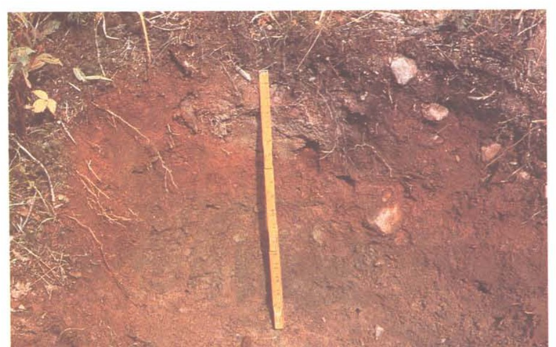

Identification & Caractéristiques Générales
La série Garneau est constituée sur un till glaciaire basal ou d'ablation à texture de loam à loam sableux, dont le matériau parental dérive principalement de l'altération de schistes ardoisiers, de microgrès, de quartzites et de grès d'origine appalachienne. Ce dépôt morainique se distribue sur les pentes et les flancs des reliefs appalachiens ondulés à fortement vallonnés, caractérisés par des déclivités variant généralement de 2 à 15 %. Ce membre de la caténa Arago-Garneau-Lafontaine se positionne topographiquement sur des segments de pente modérée à forte, où le substrat rocheux subaffleurant influence par endroits la profondeur effective du profil.
Morphologiquement, le profil présente un drainage naturel imparfait, dicté par la position topographique et la compacité relative du till sous-jacent qui restreint le mouvement vertical des eaux. La texture dominante de surface est un loam pierreux à loam sableux pierreux, caractérisé par une pierrosité abondante en surface et en profil, incluant une forte proportion de blocs erratiques d'origine locale et régionale. Le matériau meuble est généralement de réaction acide dans le solum, les valeurs de pH augmentant en profondeur pour s'approcher de la neutralité au contact du till moins altéré, situé entre 0,9 et 1,8 mètre de profondeur.
Les aptitudes agronomiques des sols de la série Garneau sont fortement restreintes par l'excès d'humidité temporaire, la pierrosité prononcée et la topographie accidentée qui limitent l'utilisation de la machinerie agricole lourde. La mise en valeur de ces terres requiert des investissements importants en matière d'épierrage mécanique, d'installation de réseaux de drainage souterrain et d'apports réguliers d'amendements calciques pour corriger l'acidité. En raison de ces contraintes physiques et agronomiques, une proportion significative de ces superficies demeure sous couvert forestier ou est exploitée de manière restreinte pour la production de cultures fourragères et de prairies permanentes.
Caractères Distinctifs & Morphologie Génétique (Comté de Dorchester — Page 77)
- Topographie : ondulée à fortement ondulée
- Drainage : imparfait
- Pierrosité : très pierreux à excessivement pierreux — 2 et 3
- Grand-groupe génétique : podzol
- Degré d'érosion : léger (W1)
- Classes d'utilisation : (C) 4P à 7P (Q) 4c à 6
- Association géographique : Arago, Lafontaine
- Végétation naturelle : épinettes, sapins
Classification Taxonomique & Environnement Pédologique
| Ordre Pédologique | Podzolique |
|---|---|
| Grand Groupe (SCSS) | Podzol humo-ferrique |
| Sous-Groupe Taxonomique | Podzol humo-ferrique gleyifié |
| Famille Pédologique | Loameuse-fine, mixte sableux, acide |
| Mode de Dépôt Parental | Morainique |
| Classe de Drainage Naturel | Imparfaitement drainé |
| Régime Thermique & Humidité | Frais / Perhumide |
Description Morphologique du Profil Type
Séquences génétiques des horizons pédologiques caractérisant le profil type représentatif de la série Garneau :
Profil forestier / boisé — Comté de Dorchester
✓ Source : Comté de Dorchester — Page 77Couleur Munsell : 2.5Y 3/2
Structure & Consistance : Polyédrique à granulaire
Description morphologique : Humus brun-gris très foncé (2.5Y 3/2); peu minéralisé; fibreux; pH: 4.7.
Couleur Munsell : 10YR 4/3
Structure & Consistance : Granulaire
Description morphologique : Loam pierreux brun foncé (10YR 4/3); structure granulaire; friable; pH: 4.7.
Couleur Munsell : 10YR 6/3
Structure & Consistance : Granulaire
Description morphologique : Loam pierreux brun pâle (10YR 6/3); structure granulaire; friable; pH: 4.5.
Couleur Munsell : 7.5YR 5/6
Structure & Consistance : Granulaire
Description morphologique : Loam pierreux à loam sableux pierreux brun vif (7.5YR 5/6); structure granulaire; friable; pH: 5.0.
Couleur Munsell : 10YR 4/3 (matrice), 10YR 5/2 (marbrures)
Structure & Consistance : Granulaire
Description morphologique : Loam pierreux à loam sableux pierreux brun foncé (10YR 4/3) avec mouchetures de couleur brun-gris (10YR 5/2); présence d'ardoises noires et de grès; structure granulaire; friable; pH: 5.4.
Couleur Munsell : 5Y 5/2 (matrice), 7.5YR 4/4 (marbrures)
Structure & Consistance : Légèrement feuilletée
Description morphologique : Loam pierreux à loam sableux pierreux gris-olive (5Y 5/2) avec mouchetures de couleur brun foncé (7.5YR 4/4); présence de nombreuses ardoises noires et de grès; structure légèrement feuilletée; ferme; pH: 5.9.
Profil naturel (vierge) — Comté de Kamouraska — Phase mince
✓ Source : Comté de Kamouraska — Page 100Couleur Munsell : 10YR 3/2
Structure & Consistance : Polyédrique à granulaire
Description morphologique : Humus gris très foncé (10YR 3/2; 2/1 humide), peu ou pas minéralisé, fibreux; net, sinueux; pH 4.0.
Couleur Munsell : 5YR 3/4
Structure & Consistance : Polyédrique à granulaire
Description morphologique : Loam sableux fin, brun rouge foncé (5YR 3-4), friable; sans structure; net irrégulier, peut atteindre 5 pouces d'épaisseur; pH 4.3.
Profil forestier / boisé — Comté de Kamouraska
✓ Source : Comté de Kamouraska — Page 101Couleur Munsell : 10YR 5/3
Structure & Consistance : Finement granulaire
Description morphologique : Loam sableux fin à loam brun à brun foncé (10YR 5/3; 4/3 humide), friable; structure finement granulaire; quelques roches; assez net, sinueux, discontinu; pH 4.6.
Couleur Munsell : 10YR 5/4
Structure & Consistance : Finement granulaire
Description morphologique : Loam sableux à loam brun jaune à brun jaune foncé (10YR 5/4; 4/4 humide), friable, structure finement granulaire; quelques roches; mouchetures distinctes brun jaune; net, graduel, varie de 3 à 6 pouces d'épaisseur; pH 4.8.
Couleur Munsell : 10YR 6/2
Structure & Consistance : Finement granulaire
Description morphologique : Loam sableux à loam gris brun clair à brun gris foncé (10YR 6/2; 4/2 humide), friable; structure finement granulaire; mouchetures distinctes et nombreuses; graduel, irrégulier; quelques pierres; laisse soupçonner une certaine éluviation dans la partie supérieure du till par la couleur et la texture (A'e) pH 5.0.
Couleur Munsell : 10YR 5/3 (matrice), 10YR 6/2 (marbrures)
Structure & Consistance : Massive
Description morphologique : Loam brun à brun foncé (10YR 5/3; 4/3 humide), avec trainées gris brun clair à brun gris foncé (10YR 6/2; 4/2 humide) et bandes rouillées ou mouchetures distinctes, brun jaune; très ferme en place, très dur et éclatant subitement sous la pression des doigts; avec enduits limoneux et/ou argileux, dans les cavités ou pores; structure massive, se détache en gros polygones; pierreux; pH 5.5. Fragipan évident. N.B. Le till devient moins différencié c.-à-d. plus uniforme en couleur (brun gris) et à une réaction plus près de la neutralité (pH 7.0) à 3 à 6 pieds de profondeur.
Profil forestier / boisé — Comté de L'islet
✓ Source : Comté de L'islet — Page 74Couleur Munsell : 10YR 2/1
Structure & Consistance : Polyédrique à granulaire
Description morphologique : Humus noir à gris très foncé (10 YR 2/1 h; 3/1 s), peu ou pas minéralisé, fibreux; limite abrupte; pH 4,0.
Couleur Munsell : 5YR 5/2
Structure & Consistance : Massive
Description morphologique : Loam sableux gris-rose à blanc-rose (7,5 YR 5/2 h; 8/2 s); structure massive; friable; limite abrupte, irrégulière; pH 4,3.
Couleur Munsell : 10YR 4/4
Structure & Consistance : Granulaire fine
Description morphologique : Loam sableux brun-jaune foncé à brun-jaune (10 YR 4/4 h; 5/4 s); structure granulaire fine; friable; quelques roches; limite distincte, sinueuse, discontinue; pH 4,6.
Couleur Munsell : 10YR 4/4
Structure & Consistance : Granulaire fine
Description morphologique : Loam sableux brun-jaune foncé à brun-jaune (10 YR 4/4 h; 5/4 s); structure granulaire fine; friable; mouchetures nombreuses, marquées, brun-jaune; quelques roches; limite distincte; épaisseur variant de 8 à 15 cm; pH 4,8.
Couleur Munsell : 10YR 4/2
Structure & Consistance : Granulaire fine
Description morphologique : Loam sableux brun-gris foncé à gris-brun clair (10 YR 4/2 h; 6/2 s); structure granulaire fine; friable; mouchetures marquées, nombreuses; quelques pierres; limite graduelle, distincte; pH 5,0.
Couleur Munsell : 10YR 5/3 (matrice), 10YR 4/2 (marbrures)
Structure & Consistance : Massive se détachant en gros polygones
Description morphologique : Loam sableux pierreux gris-brun à gris clair (10 YR 5/3 h; 7/2 s); structure massive se détachant en gros polygones; très ferme en place; très dur et cassant sous la pression des doigts; mouchetures brun-jaune nombreuses, marquées; enduits limoneux et/ou argileux; traînées brun-gris foncé à gris-brun clair (10 YR 4/2; 6/2); limite diffuse; pH 5,5.
Couleur Munsell : 10YR 4/2
Structure & Consistance : Massive consistance ferme
Description morphologique : Loam sableux brun-gris foncé à gris-brun clair (10 YR 4/2 h; 6/2 s); structure massive consistance ferme; enduits argileux rares; mouchetures brun-jaune à jaune-brun, nombreuses, marquées, grosses à moyennes; pH 5,6.
Profil forestier / boisé — Comté de Bellechasse
✓ Source : Comté de Bellechasse — Page 60Couleur Munsell : 10YR 3/2
Structure & Consistance : Polyédrique à granulaire
Description morphologique : Humus fibreux, peu minéralisé, brun gris très foncé (10YR 3/2); friable; pH 4.0.
Couleur Munsell : 10YR 6/3
Structure & Consistance : Quasi particulaire
Description morphologique : Loam sableux, brun pâle (10YR 6/3); structure quasi particulaire; limites nettes et sinueuses; mouchetures peu visibles; friable et perméable; pH 4.3.
Couleur Munsell : 10YR 4/4
Structure & Consistance : Granulaire bien développée
Description morphologique : Loam sableux, brun foncé (10YR 4/4); structure granulaire bien développée; mouchetures peu visibles; limites sinueuses et discontinus; quelques pierres; friable et perméable; pH 4.6.
Couleur Munsell : 10YR 4/4 (matrice), 10YR 5/4 (marbrures)
Structure & Consistance : Granulaire peu développée
Description morphologique : Loam sableux, brun jaune foncé (10YR 4/4); structure granulaire peu développée; mouchetures distinctes brun jaune (10YR 5/4); quelques pierres; friable et perméable; pH 4.8.
Couleur Munsell : 10YR 4/2 (matrice), 10YR 5/6 (marbrures)
Structure & Consistance : Granulaire peu développée
Description morphologique : Loam sableux, brun foncé (10YR 4/2); structure granulaire peu développée; mouchetures distinctes et nombreuses, brun jaune (10YR 5/6); quelques pierres; friable et perméable; pH 5.0.
Couleur Munsell : 10YR 4/3 (matrice), 10YR 6/2 (marbrures)
Structure & Consistance : Massive
Description morphologique : Loam pierreux, brun foncé (10YR 4/3) et gris brun clair (10YR 6/2); structure massive; mouchetures distinctes; fragipan dur et éclatant en blocs polygonaux sous la pression des doigts; compact et imperméable; pH 5.5.
Profils Photographiques & Planches de Terrain
Documents iconographiques, figures pédologiques et coupes de terrain documentées dans les mémoires d'inventaire pour de la série Garneau :


Propriétés Physico-Chimiques & Analyses de Laboratoire
| Col 1 | Col 2 | Col 3 | Col 4 | Col 5 | Col 6 | Col 7 | Col 8 | Col 9 | Col 10 | Col 11 |
|---|---|---|---|---|---|---|---|---|---|---|
| Aa | 0- 6 | 41.6 | 54.0 | 4.4 | 4.9 | 7.66 | 0.36 | 6.36 | 23.86 | 26 |
| Bhfg | 6- 8 | 49.6 | 50.0 | 0.4 | 5.0 | 3.62 | 0.22 | 1.94 | 17.04 | 11 |
| Bfg | 8-14 | 45.6 | 52.0 | 2.4 | 5.1 | 1.78 | 0.00 | 1.40 | 9.30 | 15 |
| BCg | 14-20 | 61.6 | 34.0 | 4.4 | 5.4 | 0.94 | 0.07 | 1.21 | 5.81 | 20 |
| Cqg | 20 + | 57.2 | 32.0 | 10.8 | 5.4 | 0.25 | 0.03 | 1.61 | 4.71 | 34 |
Particularités Régionales, Phases & Variantes Pédologiques
Déclinaisons régionales, faciès texturaux, phases d'érosion ou de pierrosité et variantes cartographiées par étude pour de la série Garneau :
| Étude Régionale | Symbole | Appellation / Phase / Variante | Différenciation avec la série type (Analyse pédologique) |
|---|---|---|---|
| Comté de Bellechasse | Ga |
Garneau loam pierreux | Modalité modale de référence (type de base de la série). |
| Comté de Dorchester | Ga |
Garneau loam pierreux | Phase pierreuse. |
| Comté de Kamouraska | Ga |
Garneau loam pierreux | Phase pierreuse. |
| Comté de L'islet | Ga |
Garneau loam pierreux | Phase pierreuse. |
Distribution Pédo-Paysagère & Représentativité Cartographique (Couverture PPS 2026)
- Arago loam pierreux (AGO) — co-occurrente dans 663 polygone(s)
- Lafontaine loam pierreux (LFO) — co-occurrente dans 343 polygone(s)
- Accumulations organiques (TNH) — co-occurrente dans 38 polygone(s)
Aptitudes Agronomiques, Hydropédologie & Conservation des Sols
Indicateurs Hydropédologiques & Vulnérabilité à l'Érosion (BDHP 2026)
Interprétation BDHP : Potentiel de ruissellement modérément élevé. Faible taux d'infiltration, présence d'horizons ralentissant le drainage descendant.
Classement selon l'Inventaire des Terres du Canada (ITC / CLI) : Classe 2w.
- Potentiel agricole : Terroir adapté aux cultures régionales selon la texture dominante et la régie de drainage.
- Contraintes majeures : Imparfaitement drainé. Risque d'engorgement temporaire ou d'excès d'eau printanier.
- Gestion & Aménagement : Drainage souterrain ou superficiel préconisé sur les terres planes. Chaulage et apport organique régulier selon les bilans agronomiques.
- Cultures adaptées : Grandes cultures (maïs, soya, céréales), prairies fourragères et cultures maraîchères selon le contexte géomorphologique.